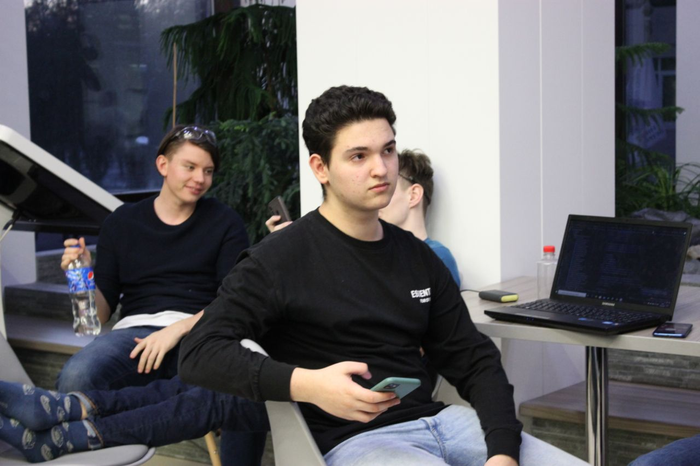

Немного о создателе

Я приветствую вас на своём сайте, посвященном великому программисту Бьёрну Страуструпу. Кто же это такой, кто я такой и почему мой сайт именно про этого персонажа. Давайте же разбираться! Зовут меня Михаил Самарский, я молодой программист, немножко робототехник и даже 3д-моделист. Как же я докатился до жизни такой?! Да я и сам толком не знаю... Но тем не менее, на настоящий момент я капитан команды по робототехнике, ведущий дизайнер в ней. В составе этой команды я являюсь финалистом St. Petersburg Qualifaer, участником Moscow Qualifaer и участником Национального Чемпионата по робототехнике ROBOTICS CHAMPIONSIP Москва 3.0 . Ещё одним моим увлечением является язык программирования C++, именно поэтому на моём сайте вы сможете найти основную информацию о его создателе - Бьёрне Страуструпе. Приятного времяпрепровождения!